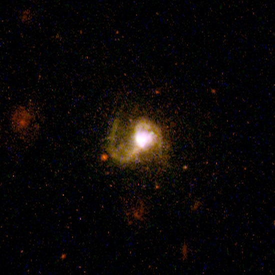
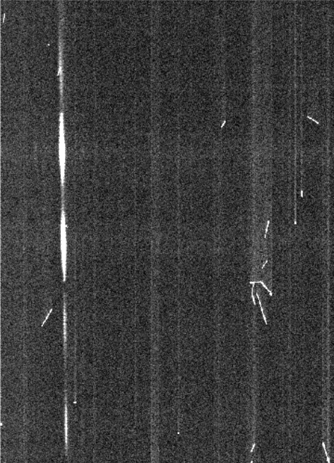
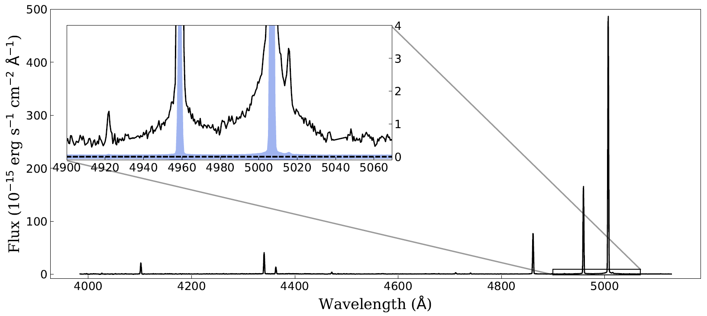
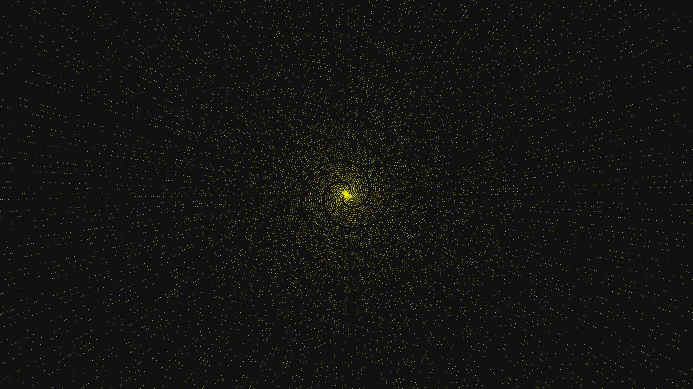
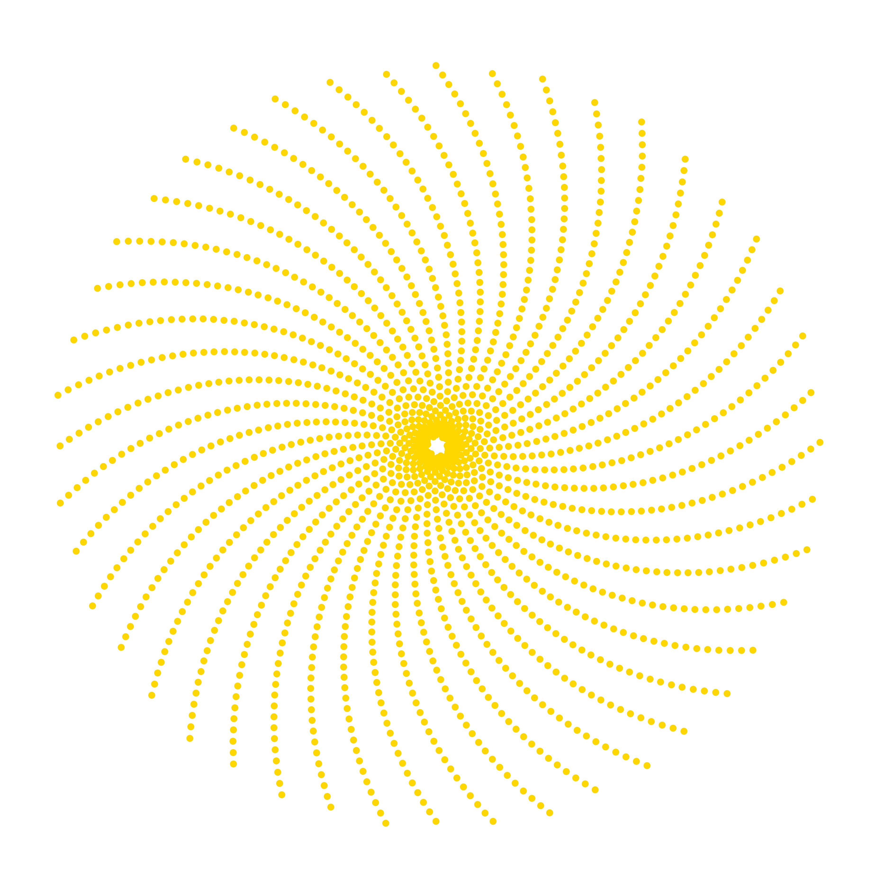

Introduction

I am a former graduate student of the Minnesota Institute for Astrophysics. My research focused on understanding the role of dwarf starburst galaxies during the epoch of reionization.
My career in research began in 2015 at the University of Wisconsin - Madison, where I worked on a variety of projects. I recieved my Bachelor of Science in Astronomy with honors, as well as in Physics, and Mathematics in 2017.
I then moved to Minneapolis to pursue a PhD in Astrophysics. There I worked as both a Teaching Assistant, and Research Assistant with Dr. Claudia Scarlata, where I used Integral Field Spectroscopy to map nebular gas dynamics, ionization states, temperatures, and other properties of nearby dwarf galaxies.
Now, I am coming off a gap year and looking for work in a role where the skills I have learned can make an impact.
Work
The table below lists my previous work experience, and is designed to mirror the ordering on my resume. Clicking the roles will bring you to a web page with more detail for each role.
Past Experience
| Role |
Description |
Primary Skills |
| Graduate Researcher |
Successfully created, proposed, developed, and published novel research. |
Data Analysis, Technical and Proposal Writing, Python, Project Management |
| Head Teaching Assistant |
Led team of Teaching Assistants, taught labs, and presented talks to the general public. |
Team Management, Presentation, Syllabus Writing, Teaching |
| Undergraduate Researcher |
Explored the astronomical research space through a variety of projects. |
Project Management, Modeling, Research, Python |
| Materials Lab Assistant |
Performed diagnostic tests on various construction materials |
Linear Regression, Research, Excel |
| Gap Year |
Utilized what I had learned in graduate school to focus on myself, learn new skills, and hone existing ones. |
Machine Learning, Neural Networks, SQL, Writing, Game Design, Game Theory, Philosophy, Ancient History |
Graduate Researcher
Image Credit: Podevin, J.f., 2006
Blow-away in the Extreme Low-mass Starburst Galaxy Pox 186
Overcoming the Data
In graduate school I primarily worked with Integral Field Spectroscopy (IFU) data, a powerful form of data that includes both spatial and spectral dimensions, allowing for the creation of images of a galaxy at every wavelength, or color. The reduction of this form of data was automated due to each exposure having 750 spectra, each needing to be calibrated and then spatially aligned into a datacube. To accomplish this I used self written python scripts, and parts of the provided reduction pipeline with some personal tweaks. After, all five exposures were combined into a single datacube using custom python scripts. The self written python scripts can be found on github.
Two major problems with the data were discovered during the reduction process. When combined, these problems made the original goal with the data impossible to achieve. By identifying the limitations in the data that these problems created, and what they restricted in terms of analysis, a new avenue of research was found among an aspect of the data that wasn't affected. This aspect was the distribution of light within a narrow wavelength range, and what it implied about the motions of the material that emitted it.
More detail about the data reduction process, and how the problems with the data were overcame can be found here.
Analysis of the Data
To analyze and model the interesting aspects of the data, a Markov Chain Monte Carlo (MCMC) fitting technique was used. Each of the over 1600 spectra, subsampled from the original 750, was fit automatically with a model containing 6 parameters. Maps of the 6 parameters were then used to make inferences about the kinematic structure of the galaxy, and what it implied about the galaxies history and future. Each fit used 100 "walkers", each their own independent fit of the model, to measure the distribution of the parameters in the parameter space. The best fit was then determined from that distribution. Below is a cornerplot of the six parameters of the model for one of the spectra, showing their individual and relative distributions.
 The blue lines denote the distribution maximum, and dashed black lines denote +/- 1σ.
The blue lines denote the distribution maximum, and dashed black lines denote +/- 1σ.
Giving the story of Pox 186 its due
Even before the MCMC analysis, Pox 186 seemed to be a special case with a unique story. The original reason for attaining the IFU data was to investigate this story. When at first when it became clear the data had problems, but still pointed to Pox being more extreme than anticipated, it was decided that the story of Pox may be compelling enough to earn time on the Hubble Space Telescope (HST). This first proposal was submitted in spring 2019, and was rejected. The rejection proved the importance of telling a good story. It did not matter the reality of the situation if that reality was not conveyed in a compelling way. So the MCMC analysis went ahead, and a year later, after learning from the first, the second proposal was accepted. This proposal is posted on github.
The above modeling, and subsequent investigation, found Pox 186 to be a strong candidate of a blow-away. Preliminary results were presented at the 2020 American Astronomical Society meeting, and the full paper was published in the spring of 2021. A copy of it is also uploaded on github. If confirmed by the new HST data it would be the first ever observation of a galaxy in such a state.
If you are interested, I wrote a public article about the finding that is uploaded on github.
Integral Field Unit Data and its Intrinsic Complexities
These data are a more advanced form of the more typical single-slit spectroscopy. Single-slit spectroscopy works by using a slit-shaped window to collect light from an object, and then splits that light into all its wavelengths, or colors, into what we call a spectra. This measures the amount of light at each wavelength, and has been the backbone of astronomy since its implementation in the field.
Integral Field Spectroscopy takes this idea a step further, and uses a bundle of fiber-optic cables to take many spectra in a grid on an object. Each fiber-optic cable is its own window to collect light from it's position in the grid, and a spectra is made from each one. This results in data that has both the spectral (color) dimension like single-slit, but also two spatial dimensions. In this specific projects case, there are 750 fibers in the bundle, or 750 spectra. Below is an example of how the bundle of fibers, each one represented by a hexagon, would fall over an object of interest.
 The left bundle would be placed on empty sky for calibration purposes, with the right bundle on the galaxy.
The left bundle would be placed on empty sky for calibration purposes, with the right bundle on the galaxy.
One ramification of this number of spectra is that the data reduction process must be automated. In order to take best advantage of the data, I edited, and in some cases rewrote sections of the provided pipeline that automatically processes these 750 spectra. Python scripts utilizing least squares fitting was primarily used for the rewritten sections. These improvements in the reduction pipeline resulted in correctly processed data where the pipeline was broken, up to a 10% decrease in the underlying noise overall, and would turn out to be crucial to the resulting analysis.
Extra Challenges
When proposing to acquire this dataset, the primary goal was to measure the amount of light at two colors, then measure the ratio between them, and use the spatial information to create a map of the ratio. This ratio is strongly influenced by the ionization state of the gas that emits it within the galaxy, and therefore measuring it would give a measure of the ionization state, or how many electrons a typical atom has lost in the galaxy. Unfortunately the creation of this map was impossible due to two major problems with the data.
The first was a charge transfer inefficiency in a part of the detector. This problem results in things being "smeared" across the image, highlighted below. While this behavior was modeled, it is impossible to know exactly where the smeared charge should be put back, and so this problem was intractable. The consequence of this problem was colors that were very different (i.e. red and blue) could not be compared reliably due to extinction.
Vertical smearing caused when the detector reads out the image.
The other problem was simply that the telescope used was not sensitive enough to measure the bluer of the two colors of interest across the fiber bundle. This problem was exacerbated by the galaxy being fainter than expected at the bluer color of interest, indicating it was more extreme than anticipated. When combined with the smearing problem, limits on the color ratio was limited to an overall lower limit. This alone was not enough for a academic paper, so a different avenue of research was needed.
The Road Less Traveled By
These two limitations of the data, not being able to compare wildly different wavelengths and lack of sensitivity at very blue wavelengths, meant that only aspects of the data that were bright and contained in a narrow wavelength range could be investigated further. Luckily, this exact scenario existed in the data, and further investigation into it found exciting implications.
Generally, atoms and ions interact with light by either absorbing it or emitting it. The structure of the atom, how many protons and neutrons are in its nucleus and electrons orbit it, determine the wavelengths, or colors, of light it will interact with. In astronomy this manifests in the form of spectral lines. An example is shown below. The key here is that a spectral line is emitted by one type of atom or ion. These lines are useful in astronomy for a variety of reasons. Here, these lines were useful due to the distribution of the light within the line because that distribution implied something about how the material that emitted the light is moving.
The spectra of Pox 186, and a zoom in of the distribution of two of its nebular lines.
Head Teaching Assistant
Image Credit: JCCC Astronomy
In my second semester of teaching I was chosen to be the Head Teaching Assistant (TA). In this role I led the team of 15 graduate and undergraduate TAs for the lab portion of the Introductory Astronomy course. I led weekly team meetings, redesigned the syllabus, organized weekly public stargazing events, gave public talks, and was responsible for troubleshooting any problems that popped up in the labs.
Beyond being the Head TA, I taught for five semesters. This extensive experience teaching primarily non-STEM students and giving science talks to the general public has trained me to present complex ideas to general audiences in an understandable way.
Undergraduate Research
Overview
My primary goal in my undergradute career was to get as much varied experience as possible within the astronomical research space. Over two and a half years I completed three research projects spanning the three major forms of research done in astrophysics: observational, computational, and instrumentation. I learned to balance these multiple projects while taking classes to earn a triple major.
Through these projects I grew in a multitude of ways. I was introduced to python, c++, and the fundamentals of research. I used tools such as the star-spot modeling code PHOEBE, the open-source data analysis framework used by CERN called ROOT, and Lomb-Scargle periodograms. Finally, these projects gave me laboratory experiences at the WIYN observatory on Kitt Peak in Arizona, and the worlds deepest clean room facility at SNOLAB in Sudbury Canada. If you are interested, below I describe the science goals of each of these projects, and describe more specifically what I did.
Variability in V4046 Sagittarius
V4046 Sagittarii is a binary star system with two T-Tauri stars. T-Tauri stars are pre-main sequence stars and therefore their brightnesses are dependent on the material accreting from their circumstellar disk. In the case of a single star, this accretion and its effects are well understood. However in the binary case, the relation between the stars and their circumbinary disk becomes significantly more complicated. Theory suggests higher eccentricity binary orbits will lead to “sharper”, more periodic accretion events, which is supported by observations. What is not well understood is the case where the binary orbit is circular because accretion events are more dependent on the physics of the circumbinary disk and less on the orbits of the stars. The overall goal of my research was to examine such a case and to provide insight into the complex interactions between the circumbinary disk evolution and accretion.
The data I worked with were high-cadence optical imaging from the Las Cumbres Observatory Global Telescope Network in the U, B, V, R, and I bands. I used python and IRAF to do photometry in order to make light curves for each of the respective bands. Using the light curves I completed a Fourier analysis and showed that V4046 Sagittarii is periodically varying. Rather than immediately explore accretion related explanations, I first investigated if star-spots could explain the variability. I created a star-spot model using PHOEBE and found good agreement to the periodic variability. The remaining stochastic events were attributed to variability due to accretion, and unfortunately my time to work on the project was over.
As a part of being on the research team this project was done in, I also observed on Kitt Peak in Arizona using the WIYN 3.5m observatory. After observing in person I continued to assist the group by assuming the responsibility of remote observing from Madison, WI for a portion of observing nights.
Neutron Calibration Simulations at Snolab
I was fortunate to have the opportunity to be an intern at SNOLAB in Sudbury, Canada. SNOLAB specializes in neutrino and dark matter physics, and is located underground in an operating mine, 6800 feet below ground. At SNOLAB I worked on the MiniCLEAN experiment, a direct dark matter detection experiment utilizing liquid argon as its detection medium. Its goal was to test a new detector design where the photomultiplier tubes (PMTs) are directly in the liquid argon. Normal detectors have their PMTS in the wall of the inner vessel, where the cryogenic liquid is contained. Consequently, the normal design results in higher noise levels because most particles deposit their energy in the argon near the walls of the inner vessel before reaching the center. Therefore most experiments are only interested in events away from the walls. In MiniCLEAN, since the PMTs are directly in the cryogenic liquid it is possible to block out those wall events and reduce the noise of the detector. While at SNOLAB I worked on setting up and connecting a condenser system that cools and condenses the argon into a liquid before it flows into the inner vessel.
The following semester I helped to remotely monitor the experiment as it continued to fill. In addition, I ran neutron calibration simulations using RAT simulation software, Root, and C++ to get an estimate on how many neutron events the PMTs will detect when doing the real neutron calibrations. This estimate was used to determine how long these calibrations needed to be run. To run the neutron calibrations, a chunk of AmBe is brought into the lab to emit neutrons at a known rate. Therefore determining how long the calibrations would take was important because introducing particle producing sources to a physics laboratory designed to limit particle backgrounds needed to be carefully controlled.
Persistence Characterization on SALT's NIR Camera
My primary experience in astronomical instrumentation was on an HgCdTe H2RG, near infrared (NIR) detector with a 1.7-micron cutoff. I primarily measured and characterizing persistence — the emission of charges that were trapped in a previous exposure when taking subsequent exposures — which is critical to high precision measurements. This included doing persistence decay and suppression tests, in addition to measuring temperature dependence. I wrote python scripts to take and analyze the data as well as visualize the results. This work contributed to the overall persistence characterization paper, and is also on github
About Me
When I decided to apply to graduate schools for Astrophysics back in 2015, I did so not for the prestige of earning a PhD but because being an Astronomer was my dream. By early 2020 however, it became clear that Astronomy was not the calling I thought it to be. Therefore I began working toward graduation. As I thought about my future beyond academia, it occurred to me that in my 21 years of schooling I was never taught how to understand myself. So in early October 2020 I graduated with a Masters, and I decided to take an extended break. In the year since, I've taken the opportunity to explore myself, my interests, and learn new skills.
Contact Me
The Math Hidden in the Background
Image Credit: /u/upzylon
Above is what you get when you plot prime numbers in polar coordinates. Each number is plotted its distance away from the origin, and at an angle equal to its value in radians, where an angle of 2π radians is a full circle around.
I love this image because the grand patterns made by the primes demand an equally grand explanation. Unfortunately for us, there is no grand reason. The spirals near the center that expand out to reveal seemingly infinite rays do not reveal some long hidden secret about numbers, or the universe. The explanation for both is just a result of how the numbers are plotted, and an interesting property of π.
Compared with other irrational numbers, π has remarkably good rational approximations. Namely, 3, 22 ⁄ 7, and 355 ⁄ 113 all do relatively well at approximating it, and multiplying them by 2 makes them close to 2π. For example, the number 44 falls very close to being exactly 14π, or 7×2π. Translating that to polar coordinates, this means that 44 is very close to 7 revolutions around the center. In fact it's slightly more. In the plot below, the point closest to the center is 44, which highlights exactly how closely it aligns with an angle of 0, or 2π, radians.

Now, if you extend further out you'll find that 88 is very close to being exactly 7 revolutions beyond 44, but again it will be slightly more than 7 revolutions. Therefore, each multiple of 44 will fall nearly in a straight line from the center, with each subsequent multiple adding a minor offset each time. That cumulative offset incrementally grows into the spiral pattern shown above. Another spiral can be made by adding 1 to every point in the above spiral, moving the whole set of points 1 radian counterclockwise. This process can be repeated 43 times. Doing so gives a grand total of 44 separate spirals, shown below.

Finally, removing all non-prime numbers is what creates the gaps within the spirals, and the missing arms evident in the original image.

This same pattern is present for the all other approximations of π, including the two mentioned earlier. Zooming into the center of the original image would reveal the spirals formed from how close 2π is to 6. In addition, those "rays" at the edges of the original image are in reality the beginnings of the spirals formed from how close 2π is to 710 ⁄ 113. The photo is just not zoomed out enough to make the curvature noticable, and so they look straight.
A fantastic video with animation on this subject and is also the source for much of the information above, can be found here.
Why do I care so much?
Well I like math. More interesting however, is what it highlights about data.
The way in which data are represented can drastically affect the way in which it's interpreted. Here, the decision to plot prime numbers in a polar coordinate system was completely arbitrary. For example, primes can just as easily be represented on a number line, but using a polar coordinate system revealed new patterns not present on the number line. If the goal was to study primes it would be easy, tempting even, to immediately assume that the patterns revealed are due to the primes rather than an outside influence. In this case, an understanding of the math embedded in the coordinate system saved us from a costly misinterpretation of the data.
The same can be said more generally about all Data Analysis, where math forms the foundation of the field. One of the hardest lessons I learned as a graduate researcher was that freely available software packages are useful, but only to a point. When dealing with challenging data, the flexibility and understanding of self written code greatly outweighs black-box software packages. Like an artisan, the skill of someone who works with data stems from their understanding of their tools, which in this case is the math hidden in the background.
{kind=link}